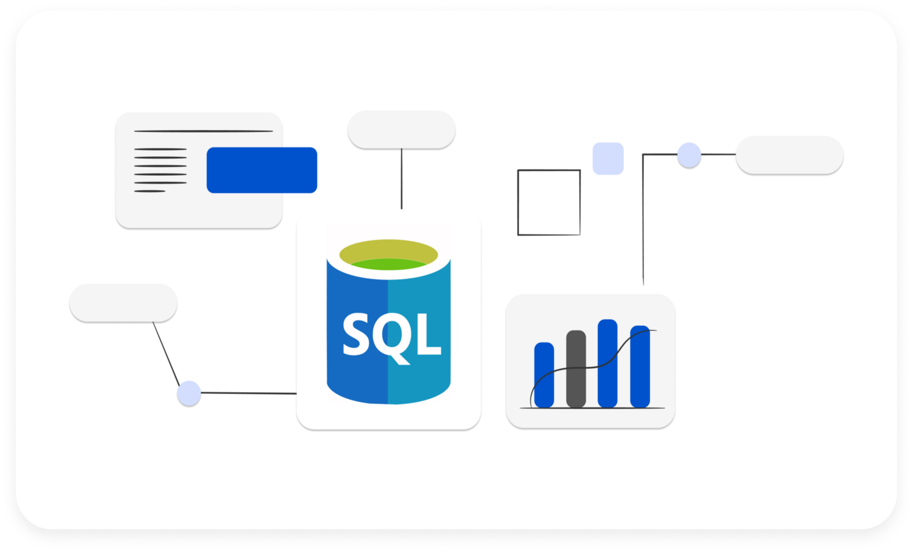
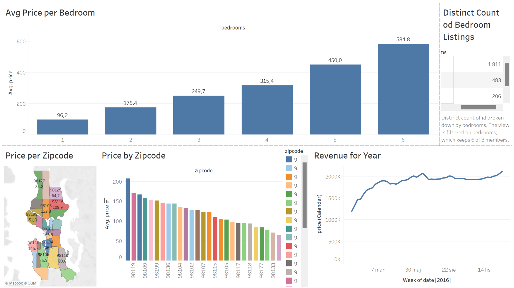
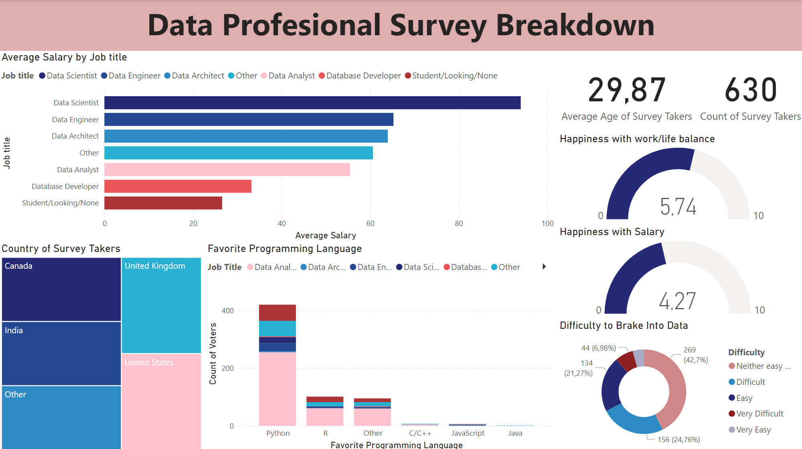

The pizza sales analysis project aims to understand various aspects of pizza sales such as number of orders, revenue, popularity of pizza sizes and types, and their contribution to total revenue, using order data, order details, pizzas, and pizza types.

The Tableau project analyzes the short-term rental market, focusing on rental listings, customer reviews, and calendar availability. It aims to provide insights into listing popularity, customer satisfaction, and property availability seasonality.

The Power BI project is based on a survey of competitors obtained from data, covering aspects like average earnings by profession, favorite programming language, satisfaction with work/life balance and earnings, and the difficulty of entering the industry.